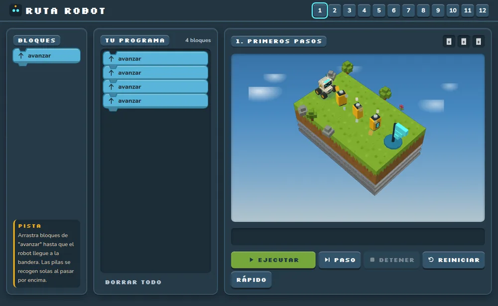
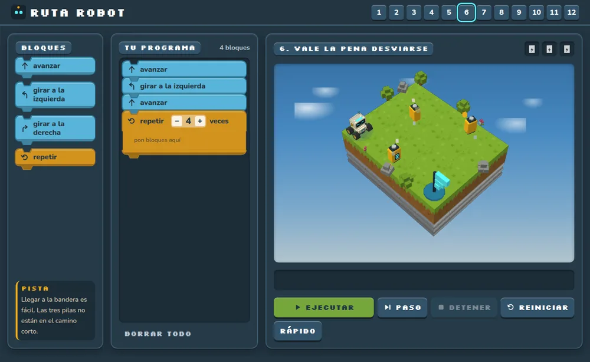
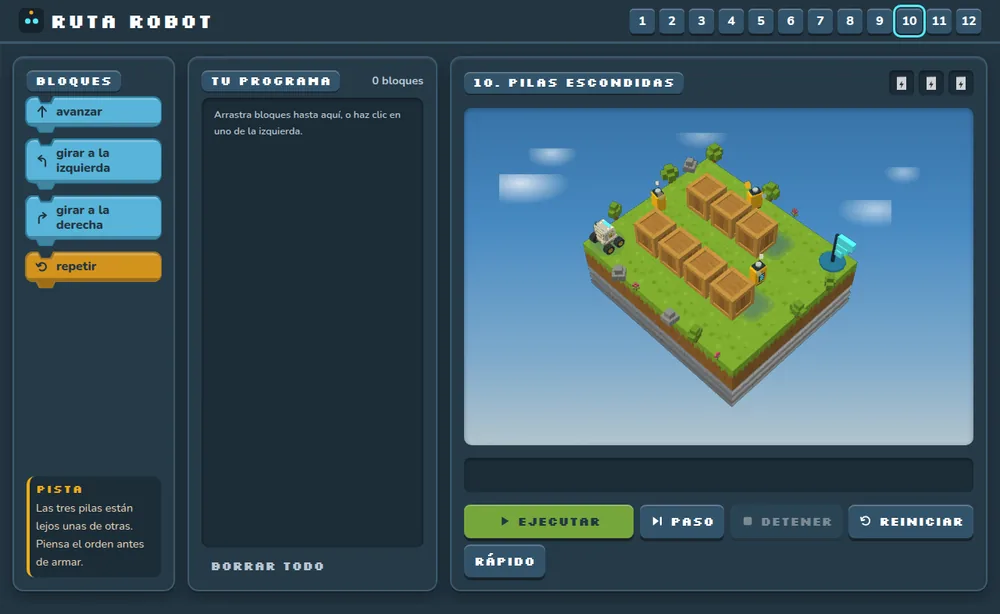

Los bloques
Avanzar, girar y repetir. El niño los arrastra y los encaja unos dentro de otros para armar el plan completo antes de apretar «ejecutar».
← Productos · Producto en uso
Ruta Robot es un juego de bloques para 3º y 4º básico. El niño arma instrucciones —avanzar, girar, repetir— y mueve un robot por un tablero hasta la bandera, recogiendo baterías en el camino.



Avanzar, girar y repetir. El niño los arrastra y los encaja unos dentro de otros para armar el plan completo antes de apretar «ejecutar».
Una cuadrícula con muros, baterías y una bandera. El robot recorre exactamente lo que el niño programó, que es justamente la lección.
Una idea nueva por nivel, en orden. Los últimos exigen ciclos dentro de ciclos, que es donde aparece de verdad el pensamiento computacional.
Cada nivel tiene una solución mínima conocida, y el niño puede llegar por otro camino. Se corrige que funcione.
Casi todas las plataformas para enseñar programación a niños necesitan cuentas e instalación. En una escuela rural eso es un muro.
Son las condiciones de la sala donde lo probamos todas las semanas.
Cualquier profesor puede conducirlo. Los niveles van de menor a mayor y cada uno introduce una sola idea, así que la clase avanza sola mientras el profesor acompaña a quien lo necesita.
Cada nivel está verificado. Sabemos que tiene solución y en cuántos pasos, así que todos los tableros se pueden resolver. Es una herramienta del taller y la entregamos junto con él.
Conversemos
Agenda una llamada o escríbenos. Contestamos todos los mensajes, y una conversación de media hora alcanza para saber si esto tiene sentido en tu establecimiento.